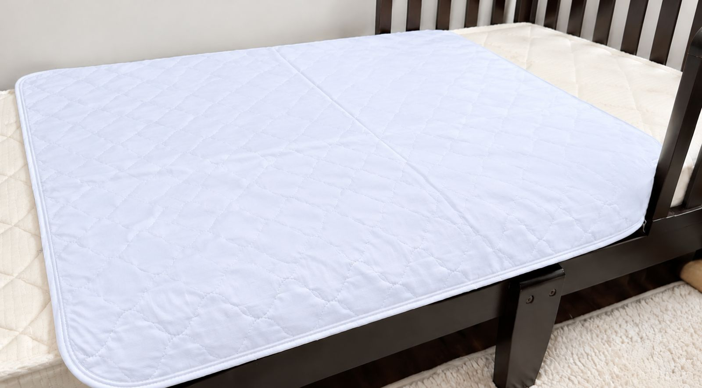

Une catégorie en croissance sur des marchés vieillissants
Vieillissement de la population, soins à domicile, commerce en ligne et durabilité stimulent la demande d'alèses lavables aux États-Unis, en Europe et au Japon.

Taille du marché des alèses en 2025 (Md$)
Sources : Fortune Business Insights ; The Business Research Company.
Caractéristiques régionales
| Région | Canal principal | Fourchette de prix |
|---|---|---|
| États-Unis / Canada | Amazon, Walmart, fournisseurs médicaux | 20–50 $ par lot (64 % des fiches) |
| UE (DE, UK, FR) | Amazon, pharmacies, caisses d'assurance | 15–40 € le lot de 2 |
| Japon | Amazon.co.jp, Rakuten, magasins de soins | ≈ 1 890–3 000 ¥ la pièce |
ASINsight (juil. 2026) ; comparateurs ; plan marché Japon VELCURA (nov. 2026).

Amérique du Nord
Le premier marché des alèses lavables. Les meilleures ventes Amazon écoulent environ 10 000 unités par mois.
Découvrir
Europe
Remboursement des aides techniques, normes de lavage à 95 °C et durabilité.
Découvrir
Japon
La société la plus âgée du monde : les couches pour adultes s'y vendent mieux que les couches pour bébés depuis 2011.
DécouvrirSources
- ASINsight – rapport Amazon US « washable underpads » (juil. 2026)
- The Business Research Company – rapport sur le marché des alèses réutilisables
- Persistence Market Research – marché des produits d'incontinence réutilisables
- Fortune Business Insights – marché des alèses jetables
- Fortune – Japon : couches adultes vs bébés (2024)
- IMARC – marché japonais des couches pour adultes
- my-best – classement 介護用防水シーツ (2026)
- testbedarf.de — Inkontinenzauflage Vergleich 2026
- TRSA – fiche d'information sur les alèses réutilisables
- Fiches produit Amazon.com (Utopia Bedding, IMPROVIA), consultées en nov. 2026
Les chiffres des études de marché varient selon le périmètre et la méthode. Considérez-les comme indicatifs et vérifiez-les avant toute décision d'investissement.
Prêt à lancer votre gamme d'alèses lavables ?
Indiquez-nous votre marché, vos tailles et vos quantités. Nous répondons sous un jour ouvré avec fiche technique et grille de prix.